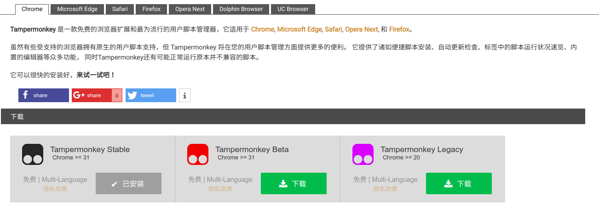

百度云下载一直是一个烦人的问题，无奈会员又太贵。。。各种工具又都不靠普
百度云下载限速的原理是按廉洁数算的，一个链接给几十KB的速度，各种下载工具无非就是采用多线程下载的方法解除限速。
总结起来就是先生成下载链接，然后用多线程下载工具进行下载。大家比较熟悉的可能是aria2c,但是它最大的进程数目为16,16*几十Kb也就是几百KB的速度。下面讲解在Ubuntu上的另一个下载工具：axel
平台：Ubuntu 18.04 4.15.0-20-generic
Step1. 获取下载链接
获取下载链接的方法有很多一下介绍两种：
安装油猴脚本管理器，然后安装相应的脚本
油猴脚本管理器：https://tampermonkey.net/

Chrome打开，点击安装Stable版即可。
脚本：https://greasyfork.org/zh-CN/scripts/by-site/baidu.com
脚本网站有很多不限于这一个，进去后搜索使用于baidu.com的脚本，找个比较新点的，得分高的下载即可。然后打开百度云(https://pan.baidu.com)，或则百度云分享链接就能看到下载助手或则是导出链接的字样。
使用Chrome插件
类似的插进有很多，这里给出一个BaiduExporter
https://github.com/acgotaku/BaiduExporter
Step2.axel登场
安装axel
1 | sudo apt-get update && sudo apt-get install axel |
使用
1 | Usage: axel [options] url1 [url2] [url...] |
Step3.正式下载
主要用axel的-n选项进行加速，百度云一般每个链接给几十KB的速度，因此我们链接数目越多下载速度越快！当然还跟你的带宽有关100MB的带宽-n 1000足够慢速下载了。1
axel -n 1000 "https://d.pcs.baidu.com/file/32a06e6f67e2567e799300b7f09c4b06?fid=3928561930-250528-591861579041114&dstime=1526751194&rt=sh&sign=FDtAERV-DCb740ccc5511e5e8fedcff06b081203-bkeG852xirZ02HOQHHOi5tBWbzc%3D&expires=8h&chkv=1&chkbd=0&chkpc=&dp-logid=3225304149957301357&dp-callid=0&r=674737288"
注意链接左右的引号不能丢，因为链接内有特殊符号！！！
网上有些说的要加ua选项、header选项什么的，2018.05.20亲测不需要加直接就能下载！100M带宽下载12MB/s。
以上就是百度云不限速下载的整个步骤，各种下载工具很多都是利用这个思路实现的。